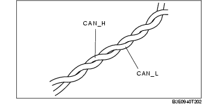

• The multichannel use two spirally twisted wires called a twist pair, and each wire, CAN_H and CAN_L, has its own special function.

• Both bus lines are opposite phase voltage. This allows for minimal noise being emitted and makes if difficult for noise interference to be received.